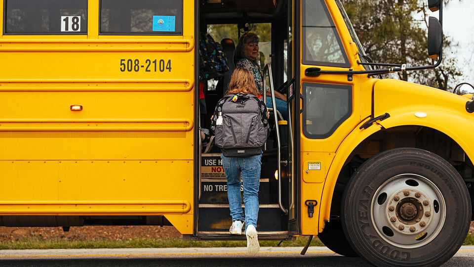

The world this week

Opening statements were made at a trial in Los Angeles that could determine whether social-media companies create algorithms to make young users addicted to their content. The case centres on a 20-year-old woman who claims Instagram and YouTube harmed her mental health as a child. The lawsuit alleges that the platforms are deliberately designed to encourage constant engagement, such as through continuous scrolling, by “borrowing heavily from the behavioural and neurobiological techniques used by slot machines and exploited by the cigarette industry”. Meta also went on trial in New Mexico for allegedly failing to protect children from online predators.
Paramount sweetened its proposal to buy Warner Bros Discovery by offering to compensate Warner’s shareholders if a deal is not completed by the end of the year. It kept the value of its proposal at $108bn. Meanwhile, an activist hedge fund is reportedly opposing Warner’s agreement to be taken over by Netflix. And America’s Justice Department is reviewing the Netflix-Warner agreement on antitrust grounds. An executive at Netflix said the company would work with the department to resolve any concerns.
Taking investors by surprise, Kraft Heinz announced that it was halting its plan to split into two separately traded companies, one focused on sauces and condiments and the other on grocery staples. The plan would have unwound the merger of Kraft and Heinz arranged by Warren Buffett a decade ago, but the company says it is now “prudent” to pause the separation and focus on profits.
Mattel’s share price tumbled after it reported an unexpected drop in operating profit and disappointing sales in the last quarter of 2025. The toymaker, which includes Barbie and Fisher-Price among its many brands, faced an uncertain business environment last year because of tariffs, forcing it to delay orders for its products. It had counted on a late spending splurge from consumers, but that didn’t happen.
American employers created 130,000 jobs in January, the largest number in over a year and almost double that of most analysts’ expectations. The news pleased markets, though the Bureau of Labour Statistics revised down the number of new jobs created during 2025 from 584,000 to 181,000.
China’s economy is on the verge of another bout of deflation. The consumer-price index grew at an annual rate of just 0.2% in January. Prices in China fell for much of last year, but started to grow again in October.
Britain’s economy grew by 1% in the last three months of 2025 compared with the fourth quarter of 2024. GDP expanded by 1.3% over the whole of 2025.
Novo Nordisk filed a lawsuit against Hims & Hers, an online provider of medications, to stop the sale of compounded versions of its Ozempic and Wegovy treatments for weight loss. Pharmacies are allowed to compound drugs, or custom-make them, to meet a specific patient’s needs or during a shortage, but Novo argues that Hims has “thumbed their nose at the law”. The Food and Drug Administration mentioned Hims specifically when it launched an investigation into compounded weight-loss drugs; the next day Hims said it would withdraw its weight-loss pill from sale.
BP wrote down the value of its renewables business by $3.2bn, curtailed its spending plans and suspended its share buy-back programme, as it shifted its focus to trimming its debt. TotalEnergies said it would reduce its stock buy-backs. Big oil companies in America and Europe have reported smaller annual profits because of last year’s lower oil prices, though since the start of this year Brent crude is up by more than 10% to nearly $70 a barrel.
Schroders, an asset-management firm in London that was founded in 1804, agreed to be taken over by Nuveen, an American asset manager, in a £9.9bn ($13.5bn) deal.
Glencore and Rio Tinto abandoned their proposed merger, after failing to agree on the terms of a deal. It was the mining companies’ third attempt to combine in a decade.
Amid drooping sales, Heineken said it would cut 6,000 jobs, or about 7% of its global workforce, over two years. In January the beermaker announced that its chief executive was stepping down.
Researchers at Berkeley found that AI tools don’t reduce work, they consistently intensify it. The article, published in the Harvard Business Review, studied a 200-person tech firm. The firm did not compel staff to use AI, but they embraced it, finding they could do more with it. Employees then discovered their workload had “quietly grown” and they felt “stretched”, leading to “cognitive fatigue, burnout and weakened decision-making”. The researchers warned that what looks like “higher productivity in the short run can mask silent workload creep”.